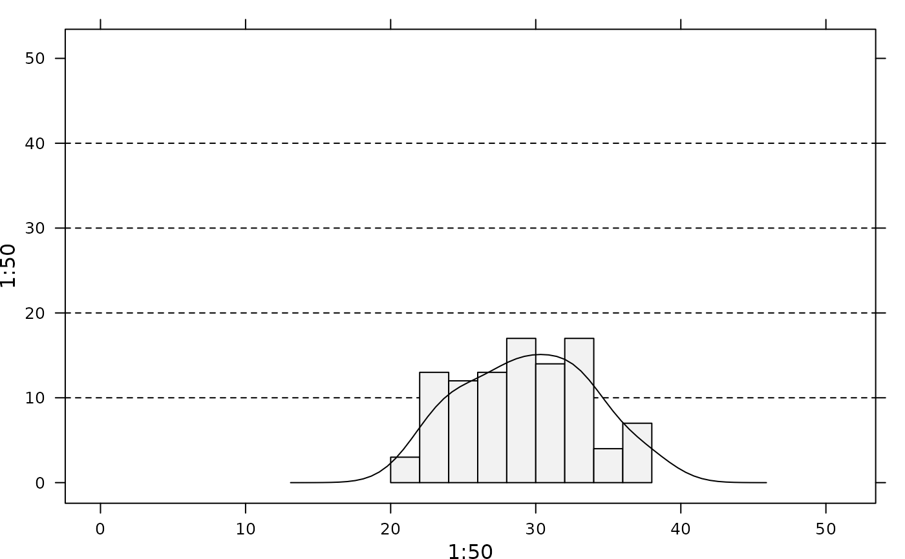

Panel function for adding histograms.
adeg.panel.hist.RdPanel function for displaying histograms into a trellis graphic (lattice
package) and level lines.
Usage
adeg.panel.hist(histValues, horizontal = TRUE, densi, drawLines, params = list(),
identifier = "histogramADEg")Arguments
- histValues
an object of class histogram. See
hist.- horizontal
a logical indicating if the plot is horizontal
- densi
a list returns by the
bkdecontaining the coordinates of the binned kernel density estimate of the probability density of the data- drawLines
a vector containing the level values
- params
graphical parameters :
plot.polygon,add.lineandplot.line(lattice)- identifier
A character string that is prepended to the name of the grob that is created.
Author
Alice Julien-Laferriere, Aurelie Siberchicot aurelie.siberchicot@univ-lyon1.fr and Stephane Dray
Note
For more information about the use of panel functions, please see the lattice package developed by Deepayan Sarkar.
Examples
if(require(KernSmooth, quietly = TRUE) & require(lattice, quietly = TRUE)) {
z <- round(rnorm(100, 30, 5))
h <- hist(z, plot = FALSE)
d <- bkde(z, kernel = "normal", gridsize = 60)
l <- c(10, 20, 30, 40)
xyplot(1:50 ~ 1:50, histValues = h, densi = d, drawLines = l,
panel = function(drawLines, histValues, densi){
adeg.panel.hist(histValues = histValues, drawLines = drawLines, densi = densi)})
}
#> KernSmooth 2.23 loaded
#> Copyright M. P. Wand 1997-2009
